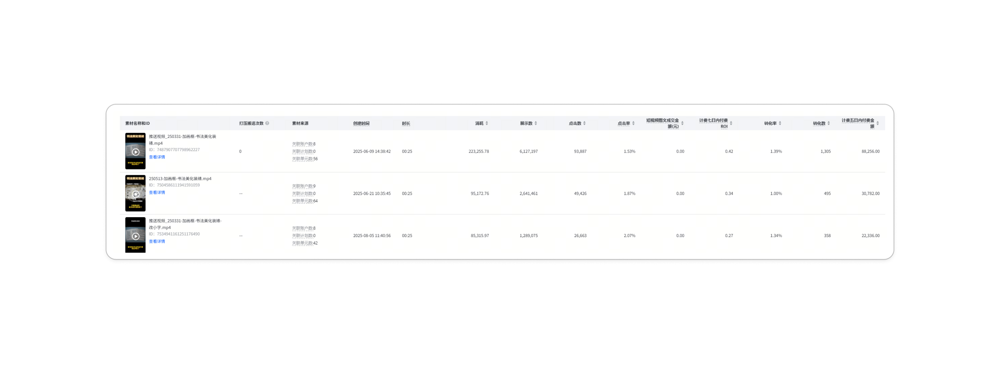

1. 信息流视频素材制作与优化

A1
A2
A3
🎯 目标
制作出多条能够高效转化的爆款买量素材。
🛠️ 做法
通过对公司 APP 的使用功能数据、用户偏好、Banner转化率、视频的用户留存时间等进行深度对比分析，精准提炼痛点，产出一条爆款素材原型。再将其进行迭代、裂变，随后进行小改、大改与二创，规模化产出更多衍生爆款素材。
🏆 结果
制作出年度消耗 22w 的 Top 1 爆款视频 A1。对 A1 采取换 BGM、换开头、换画面、抽帧去重等二次优化操作，成功裂变出另外两条年度消耗 Top 2（消耗 9.5w）和 Top 3（消耗 8.5w）的爆款视频 A2 和 A3。
(注：公司基准线为持续总消耗 >5w 即算爆款)
一年内，直接拉动公司抖音官方账号涨粉 5,000+。
(注：公司基准线为持续总消耗 >5w 即算爆款)
一年内，直接拉动公司抖音官方账号涨粉 5,000+。